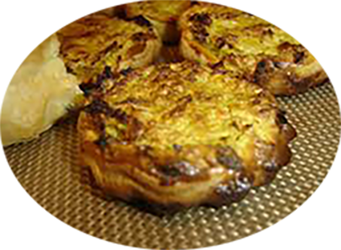

Tartelettes au crabe

Pour 30 tartelettes
Préparation : 30 mn
Ingrédients
- 1 rouleau de pâte feuilletée
- 1 boite de chair de crabe
- 1 oignon
- 1 œuf
- 1 cuillère à soupe de crème fraiche épaisse
- 10 cl de crème liquide
- Gruyère râpé
- Ciboulette
- Huile d’olives
- Poivre
- Sel
Recette
- Étaler la pâte feuilletée et passer le rouleau de manière à ce qu'elle ne soit pas trop épaisse.
- A l'aide d'un verre, découper des ronds de tailles égales, puis les déposer sur des moules (Exemple : moule à muffins).
- Couper les oignons très fins et les faire revenir tout doucement dans l'huile d'olive.
- Dans un bol mélanger l’œuf, la crème fraîche et la crème liquide, sel et poivre.
- Sur chaque rond de pâte, déposer dans l'ordre quelques morceaux d’oignons, haché, puis une petite cuillère de chair de crabe,
1 bonne cuillère du mélange œuf crème, un peu de gruyère râpé et enfin saupoudrer le tout de ciboulette ciselée.
- Enfourner à 200°C pendant 20 à 25 min (surveiller pour ne pas que cela soit trop cuit !)
|